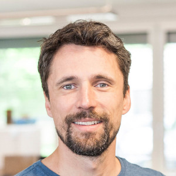
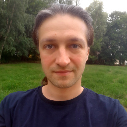
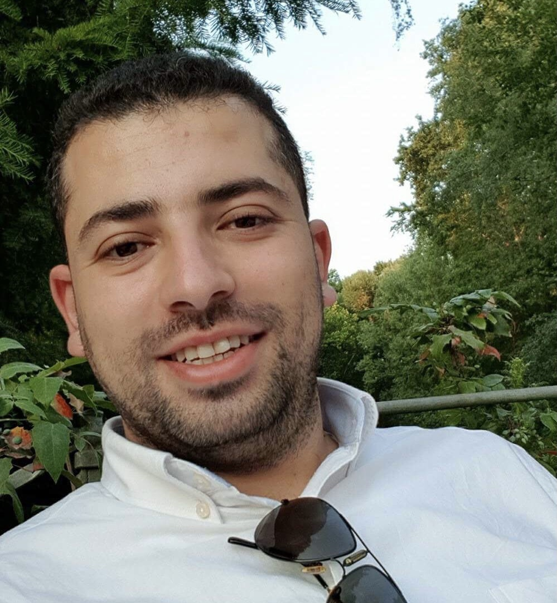
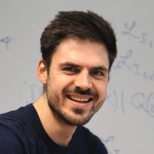
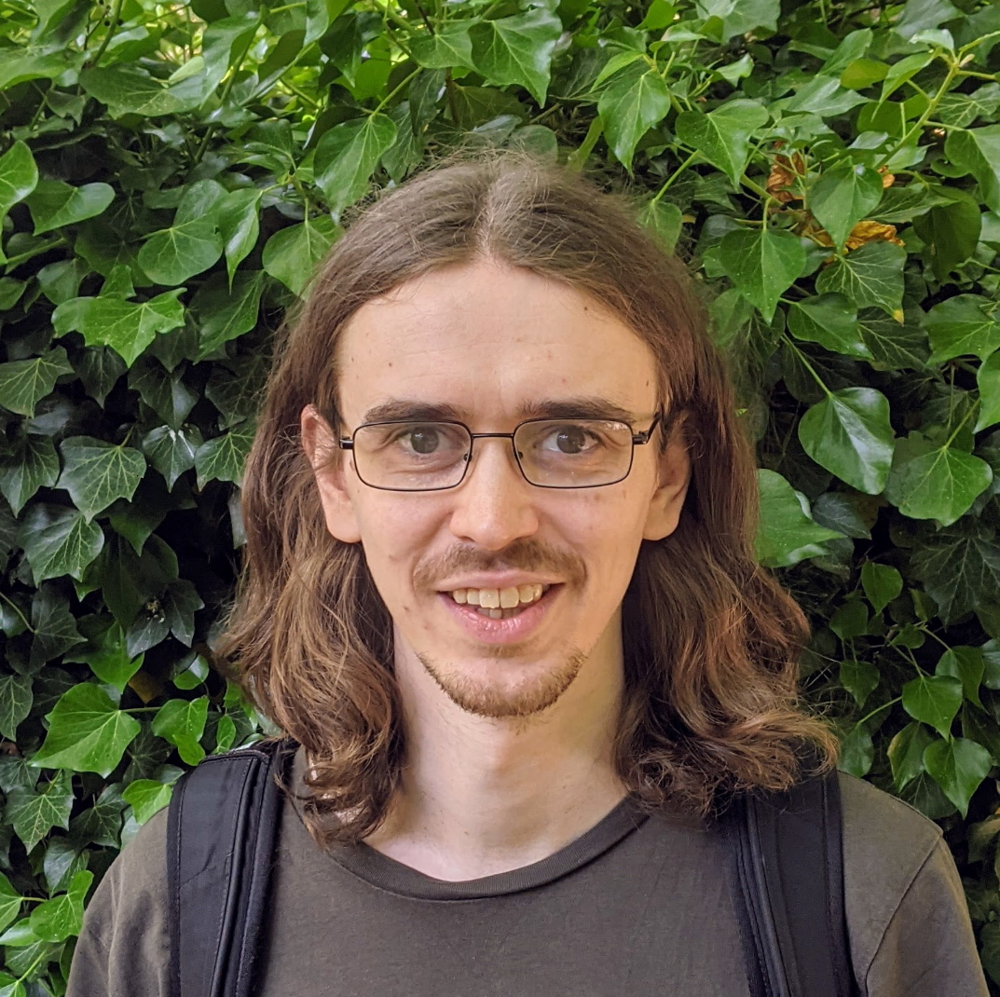
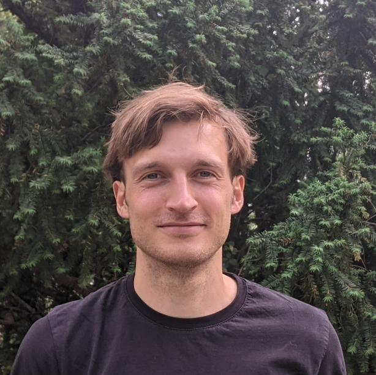
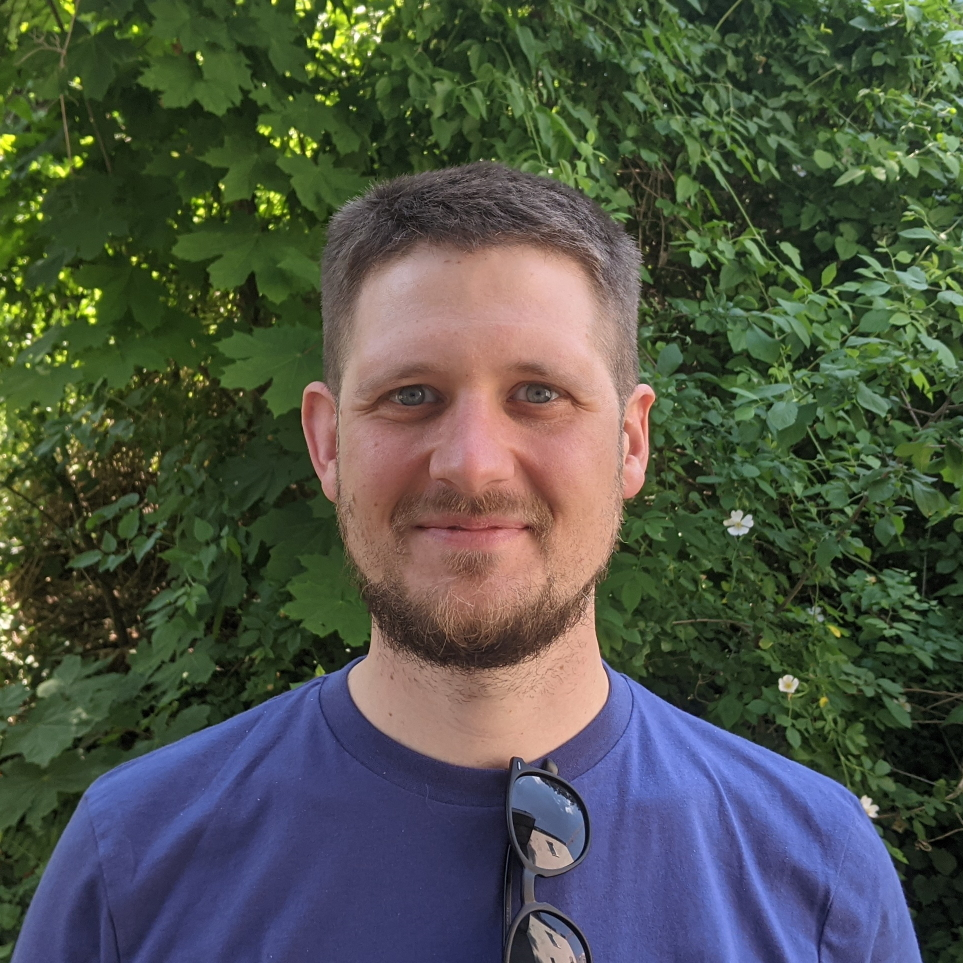
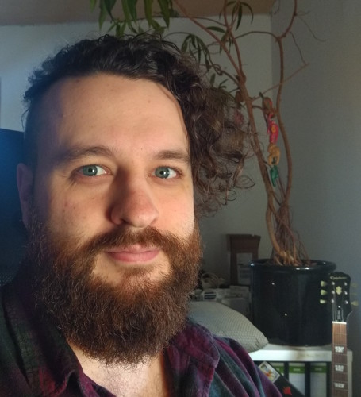
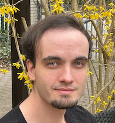

Tim Landgraf
Assistant Professor
Tim is Professor of Artificial & Collective Intelligence at Freie Universität Berlin where he teaches and studies different aspects of intelligent systems. In interdisciplinary projects, his lab investigates the individual and collective intelligence of model organisms, and develops new tools and ML algorithms. He is also active in the startup scene, as a mentor to several startups in Berlin and as a tech advisor to investors.
Sarah Kiefer
PostDoc
Sarah is a postdoc in Tim’s lab working in project Hiveopolis. She has a background in biology and did her PhD at FU Berlin on bioacoustics of nightingales. She has been managing citizen science projects at Leibniz Institute for Zoo and Wildlife Research (IZW) and now studies how bees respond behaviorally to technological augmentations of the hive.

Cristian Tatarau
PostDoc
PostDoc, working on the project “Learning the language of the brain: adaptive brain-machine interfaces maximize information transfer through autonomous interaction with brain tissue”. I’m working at the boundary between Life Sciences and Computer Science. I’m passionate about understanding how neural systems work, about what we can learn from nature, and how we can apply artificial intelligence to clinical applications.
Andreas Gerken
PhD Student
Working on agent-based fish models, using machine learning to bridge the gap between the swarm behavior and the individual behavior. Observer bias is avoided, by training the behavior directly from recordings of real fish. An additional topic is extending attribution methods to explain the models on different time- and swarm scales.




Oana Iuliana Popescu
PhD Student
My PhD thesis focuses on explainable AI for graph neural networks with theoretical guarantees and the application of these methods to different domains like social networks and climate data. In parallel, I am working on the Petra-KIP (Persönliches transparentes KI-basiertes Portfolio für die Lehrerbildung) project which aims to assist students in their learning process with AI-supported self-reflection methods.


Luis Herrmann
Master Student / Student Assistant
Luis is currently researching ways of improving the stability of neural network training for his Master Thesis at Tim’s lab. He has also been supporting Professor Landgraf with the Machine Learning lectures and is working on a collaboration between Professor Landgraf’s lab and Professor Eils’ lab at Berlin Institute of Health by Charité to use the power of Machine Learning for improving illness prediction from genetic data.
